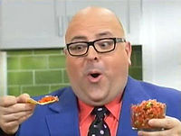

Infomercial
 De: La Frikipedia, la enciclopedia extremadamente seria.
De: La Frikipedia, la enciclopedia extremadamente seria.
De la serie Programas de TV:
Típica maquina inútil de infomerciales
| Idioma original:
|
Irlandes, Canadiense y Mexicano
|
| Creador:
|
El Mal
|
| Duración:
|
1 hora, si tienes suerte
|
| No. Episodios:
|
1.12394* 9512
|
| No. Temporadas:
|
1 Sola temporada de 30 años
|
| ¿Aún se transmite?:
|
En todo el Universo, incluyendo Kazakstán
|
| Género:
|
Tortura Económica Critica
|
| Nivel de frikismo:
|
Altísimo
|
| Películas:
|
Duran mas que una pelicula, eres masoquista?
|
Achtungh: Por desgracia los infomerciales dejan ganas de ver mas
Le suena familiar esto?:"Alguna vez ha ido caminando por la calle y una ancianita lo golpea con su bastón, esta muy ocupado seduciendo a su empleada y su secretaria anciana lo golpea con una sombrilla, va conduciendo cuando de repente es golpeado por un auto conducido por el viejo señor Martínez, es acorralado en la calle por una pandilla y los abuelos del pueblo lo golpean?, pues lo tenemos solucionado con la nueva "Zerze-Abueleitor 5000® ™" la única maquina que garantizara matar a todos los mayores de 60 años a su alrededor... esos son los infomerciales.
Características de los infomerciales
Por desgracia, las celebridades también caen en sus malvadas redes.
- Son Malvados, así que lo primero que harán es ofrecerte un producto que ya tienes con otra forma y color, te venderán 2 por le precio de 3 pero lo disfrazaran de alguna manera, suelen tener nombres que terminan en -Eitor -Matic y 3000.
- Utilizan novedosas promociones engañosas de mercado como elevar el precio del producto al doble y venderlo por 50% de descuento o vender 3 por el precio de 30, cortesia de la manufactura china, obviamente presentan el producto de la forma mas novedosa posible.
- Contratan a celebridades de hace 1 millón de años que se rehabilitan por drogas o muertas para que le hagan publicidad gratis al producto, un ejemplo son los asadores con radio de Gary Oldman y el misterioso Horno Nuclear de Mr. T
- Hacen entrevistas con campesinos
estúpidos o previamente sobornados para que hablen bien del producto aun sin haberlo usado en su patética y miserable vida, haciendo que digan cosas como "Yo cocine un Unicornio con este horno"
- En su defecto contratan a actores que no pudieron entrar a las telenovelas diurnas para que se hagan pasar por profesionales en el área de lo que sea que haga el producto y le ponen nombres sospechosos como Dr.Chappapotey ™ o Dave Hetfield, los hacen decir algo de este estilo: ‘‘‘Yo el Dr.Bob recomiendo la crema dental de Uranio porque mata el 20% de las bacterias
- El narrador tiene un grave síndrome emocional o algún tipo de trauma infantil, pues siempre se impresiona con todo y gritando cada 30 segundos, siempre repite las mismas frases "por tan solo...", ‘‘"pero esperen, aun hay mas...", "este producto esta garantizado por la unión africana de HOYGANS" y "Mi vida da asco"
- El público obedece siempre al malevolo, pero todopoderoso letrero de aplausos, si el letrero les dice que maten, lo harán.
- Siempre hay una imagen con un desfavorable antes y un sospechoso después
Origen/Historia
Un día de los años 70 un montón de ejecutivos de TV disco estaban aburridos y buscaban formas para torturar al pobre televidente, pero también formas para hacer que se pegara aun mas a la caja idiota, pero nos concentraremos en el conserje de la televisora, que estaba cansado de tener que limpiar el piso que estaba enormemente manchado con los rayones que producían los empleados de la televisora al caminar, entonces decidió tirarse de un balcón de un 4to piso para terminar con su patética vida, pero en lugar de morir tuvo una visión de Dios, que después fue borrada con un mensaje de Diox

|
Hijo de mi fastidioso hermano, te dejo un mensaje y una misión que solo tú puedes cumplir
- inventa algo estúpido para que los ejecutivos lo vendan a través de un medio
- Malevolo, que torturara a todos los fans de la buena televisión y provocara grandes
- Crisis economicas, solo inventa algo que yo me encargo de el resto
|

|
| Sacado de un diario amarillista
|
El pobre conserje tuvo la idea mas estúpida de su vida, ir a comer a FOX le ofreció hacerle un comercial de 30 minutos para sus estúpidos patines, que seria transmitido de Lunes a Sábado por la mañana a la 7:00 am, horario donde mucha gente lo vería, obviamente el conserje inventor acepto, pero puso como condición que hubiera promociones para los primeros pedidos.
El programa se volvió el éxito mas grande de FOX antes de Los Simpson y los malvados ejecutivos tuvieron otra idea para los infomerciales, invitar a estrellas en estado de crisis, el primer famoso en salir en un infomercial fue Charles Chaplin vendiendo un micrófono que traducía del idioma Nazi Chaplin al Ingles, mas tarde el control de los infomerciales seria tomado por un nuevo grupo con hambre de poder y sesos de caracol, los Yuppies (esos que dicen "Nosotros somos jóvenes y llenos de nuevas y frescas ideas de las cuales ninguna es buena, es hora de sacar lo viejo blao...") que introdujeron ideas tan tontas y estúpidas que hacen lucir al Show de los subnormales como un buen programa, pero introdujeron el marketing de control mental al la TV.
Cosas que salen en los infomerciales
 La actual crisis económica también afecta los infomerciales, ya no contratan gente atractiva
- El 50% de los infomerciales vende aparatos milagrosos para bajar de Peso, una maquina exactamente igual a la de los gimnasios comunes pero que mueve 20 músculos mas, un gel de un animal extinto que derrite la grasa y la envía a otra dimensión, una dieta milagrosa de 3 días que le garantiza bajar 30 tallas y mucho mas...La característica típica de este tipo de infomerciales es que siempre aparecen supermodelos.
- Un Tecno-Trapeador que funciona con el poder del Anillo, con un sistema de canaletas que atrapan el liquido, la mugre y la magia negra o que tienen vapor radioactivo que desintegrara tanto la suciedad como el suelo, con un nombre como Cleaner 2130 o H2NO
- Un Horno que funciona con Ki, Reiatsu y Chakra quitándole toda la grasa a la comida, que no gasta luz y que es tan fácil de empacar como un rifle de precisión JL-12A34, cocinando la comida con Rayos Gamma y Canticos Budistas.
- Un Procesador de alimentos de marca rara que originalmente era Hamilton Bleach, funciona con la fuerza motriz de la muñeca y puede picar carne, queso, lechuga, tomate, leche, materia oscura y el torso de Bruce Lee
- La Cruz milagrosa de Valencia, cuyo núcleo de poder es una roca bañada por los orines de Jesús, alienada con el cosmos de los 12 signos de el Zodiaco y fabricada por los mismos guardaespaldas de el papa, bendecida por el mismo San Pancracio.
- Un Político Honesto o Un Reggetonero Inteligente
- Artículos de Valor Histórico Y sentimental para frikis, como el lápiz con el que fue dibujado Doraemon por primera vez o un libro escrito por George Lucas diciendo que el es en realidad un Jedi de verdad, obviamente estas son estafas.
- La llave para dominar el mundo
- Un control remoto para prender la luz, que incluye un par de pilas y una guía para levantarse
pero espere, aun hay mas, las primeras 200 llamadas....
Esquema de un infomercial
Posible resultado del infomercial del ejemplo (aplicado levemente)
- Primero sale el anuncio de el canal diciendo que no es responsable por los homicidios y accidentes que produzca el producto de el comercial, luego sale el narrador diciendo:
- Alguna vez esta en una lucha contra ninjas de la aldea del sonido y un otaku lo interrumpe para pedirle autógrafos?, Esta cansado de que en cada concierto un fan gay salga a interrumpirlo por que lo ama y se quiere cazar con usted?, Intenta conquistar al mundo a través de un sistema inoperativo? Va a matar a Hitler y un gamer hace un mod para que usted sea el muerto? Pues le tenemos la solución a ese problema, la nueva dieta de la fealdad que lo hará tan feo que ninguna persona se le querrá acercar
- Luego Sale el presentador o los presentadores y cuentan sus experiencias:
- Ryuk:Hola soy Brad Pitt, un hombre guapísimo que tenia gusto por algo que no fueran manzanas y Lady era antes Una mujer completa, pero desde que comprobamos la dieta de la fealdad somos rechazados en todas partes y ya no tenemos hordas de cientos de fans furiosos cierto Lady?
- Lady Gaga:Cierto Ryuk , yo solía ser la chica de la escuela que todos invitaban al baile de graduación, tenia miles de fans hombres dispuestos a acostarse conmigo y eso no me gustaba porque yo era una zorra que quería tener una vida tranquila así que probé la dieta de la fealdad y me funciono
- Ahora salen un falso doctor y un falso testigo Hoyganés
- Doctor Chappapotey™:Ahora probaremos que la dieta de la fealdad altera de forma tan grave las hormonas que te retorcera el cuello y quedaras horrible, y para eso escogere una persona de el publico al "azar" para que no quede duda, si señor usted ¿como se llama?
- Pendejo HOYGAN:ME YAMO PENDEJU HOYGAN A ZU CERBIZIO.
- Doctor Chappapotey™:Bueno pues ahora probemos el producto
- Prueban el producto y funciona ya sea porque es el único de buena calidad existente o porque las cámaras de televisión están trucadas
- Ryuk:No puedo creer que funcione
- Lady Gaga:Pero no lo sabíamos ya?
- Ryuk:Ehh cierto Lady, que observadora
- Ponen la misma narración del principio mientras Lady Gaga muere a manos de Ryuk, sacan su cadáver de la escenografía y limpian la sangre hermafrodita, luego muestran las increíbles promociones que acompañan al producto, generalmente 2 por el precio de 1 y un montón de accesorios que obviamente nunca serán usados, ya de vuelta Ryuk se despide y los ejecutivos celebran un infomercial exitoso.
Gente que sale en los infomerciales
- Yo + Tu + El + Mr. x + El Tipo que hace las listas ultralargas (Publico del Escenario).
- Estrellas de los Años 70 que estan Muertas.
- Celebridades de los 80 y 90 que han caído en desgracia.
- Actores que no fueron seleccionados para actuar en Televisa o Venevisión.
- El Doctor Chappapotey™.
- Dictadores de Corriente Fascista.
- Personajes de anime que buscan redención como Ryuk, Matsuda, Eduard Elric
, Zoka de avatar.
Doctor Chappapotey™ es una marca registrada de DonkeyTV Evil Corp en Uganda, Rusia y Mexico
Autor(es):
- Gñapero Solitario
- Dancob
- Generibot
- Th´albert
Frikipedia 2005-2016, Licencia
GFDL 1.2 - Extraído por FrikiLeaks